20.1 Introduction
Ballfun is a new part of Chebfun for computing with scalar and vector functions defined on the unit ball. It is an extension of Spherefun [5] and Diskfun [6] to three dimensions and like them contains dozens of functions to perform basic operations between functions and vectors such as differentiation, integration, Helmholtz decomposition, poloidal-toroidal decomposition, and many others. It was created by Nicolas Boulle and Alex Townsend [3].
A function $f$ on the unit ball can be expressed in cartesian coordinates $f(x,y,z)$, where $x^2+y^2+z^2\leq 1$. For example, the function $f(x,y,z) = \cos(xy)$ can be constructed in Ballfun by the following command
f = ballfun(@(x,y,z) cos(x.*y)); plot( f )

Ballfun also allows functions to be supplied to the constructor in spherical coordinates $f(r,\lambda,\theta)$, where $r$ is the radial variable, $\lambda$ is the azimuthal angle between $-\pi$ and $\pi$ and $\theta\in[0,\pi]$ is the polar angle.
g = ballfun(@(r,lam,th) ... cos(r.^2.*cos(lam).*sin(lam).*sin(th).^2), 'spherical');
The resulting objects are identical up to machine precision:
norm( f - g )
ans =
0
We call the resulting representations ballfuns:
f
f =
ballfun object:
domain r lambda theta vertical scale
unit ball 21 41 37 1
The output displays the discretization size employed to represent the function in a Chebyshev-Fourier-Fourier expansion. The numbers $21$, $41$, and $37$ indicate that the ballfun is represented by a $21\times 41\times 37$ tensor of coefficients. The Chebyshev-Fourier-Fourier coefficients can be visualized with plotcoeffs:
plotcoeffs( f )
20.2 Visualizing ballfuns
There are plenty of ways to visualize a ballfun object. The simplest is the plot command:
f = cheb.galleryball('moire');
clf, plot( f )
Slices of the ballfun along the planes $x=0$, $y=0$ or $z=0$ passing through the origin can also be obtained, taking the form of diskfuns:
fdisk = f(:, :, 0) plot( fdisk )
fdisk =
diskfun object
domain rank vertical scale
unit disk 41 4.2
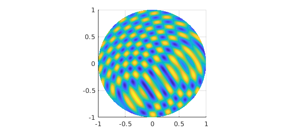
Moreover, the restriction to the unit sphere can be obtained with the following command, returning a spherefun:
fsphere = f(1, :, :, 'spherical') plot( fsphere )
fsphere =
spherefun object
domain rank vertical scale
unit sphere 87 4.9
20.3 Basic operations
Nearly a hundred commands have been overloaded to allow users to visualize, manipulate, and compute with ballfuns. We detail a few of the basic commands below.
For example, addition, subtraction, and multiplication are given by the operators '+', '-', and '.*':
f = ballfun(@(x,y,z) sin(x.^2+z.^2)+cos(y).^2); g = ballfun(@(x,y,z) sin(x.*z)+cos(z).^3); subplot(2,2,1) plot( f ), title( 'f' ) subplot(2,2,2) plot( g ), title( 'g' ) subplot(2,2,3) plot( f + g ), title( 'f + g' ) subplot(2,2,4) plot( f .* g ), title( 'f .* g' )
The definite triple integral of a ballfun is computed via the sum3 command. For example, the integral of $f(x,y,z)=x^2$ over the unit ball is $4\pi/15$.
f = ballfun(@(x,y,z) x.^2); intf = sum3(f) error = intf - 4*pi/15
intf =
0.837758040957278
error =
0
Ballfun offers the sum command for integrating over the variable $r$, $\lambda$ or $\theta$, returning a spherefun or a diskfun. The following code computes
$$s(\lambda,\theta) = \int_0^1f(r,\lambda,\theta)r^2dr$$
and returns a spherefun.
f = ballfun(@(x,y,z) x.^2); sumf = sum(f, 1) clf, plot( sumf )
sumf =
spherefun object
domain rank vertical scale
unit sphere 1 0.2
sumf = sum(f, 2) plot( sumf )
sumf =
diskfun object
domain rank vertical scale
unit disk 1 3
Similarly, sum2 integrates functions over two of the three variables:
$$s(\lambda) = \int_0^\pi\int_0^1f(r,\lambda,\theta)r^2\sin(\theta)drd\theta,$$
f = ballfun(@(x,y,z) y); sum2f = sum2(f, [1, 3]) plot( sum2f )
sum2f =
chebfun column (1 smooth piece)
interval length endpoint values trig
[ -3.1, 3.1] 3 -7.6e-17 2e-17
vertical scale = 0.34
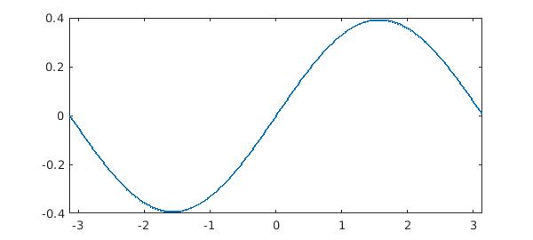
Ballfun has a fast rotate command to efficiently rotate functions.
f = ballfun(@(x,y,z) sin(50*z) - x.^2);
g = rotate(f, -pi/4, pi/2, pi/8);
subplot(1,2,1)
plot( f ), title('Original')
subplot(1,2,2)
plot( g ), title('Rotated')
Differentiation on the ball with respect to spherical coordinates in $r$, $\lambda$ and $\theta$ may introduce singularities. For instance, consider the smooth function $f(r,\lambda,\theta) = r\cos\theta$. The derivative of $f$ with respect to $\theta$ is $-r\sin\theta$, which is not smooth along the axis $x=y=0$. However, we are interested in computing derivatives that arise in vector calculus such as the gradient, the divergence, the curl or the Laplacian. These operations can be written in cartesian coordinates with partial derivatives with respect to $x$, $y$ and $z$ and are smooth. We follow a similar approach to Spherefun and express the partial derivatives in $x$, $y$, $z$ in terms of the spherical coordinates $r$, $\lambda$ and $\theta$. These operations are implemented in Ballfun in the diff command. For example, the partial derivative of $f(x,y,z) = \cos(xy)$ can be computed by
f = ballfun(@(x,y,z) cos(x.*y));
g = diff(f, 1);
exact = ballfun(@(x,y,z) -y.*sin(x.*y));
norm(g-exact)
clf, plot( g ), title('df/dx')
ans =
3.249027369941537e-14
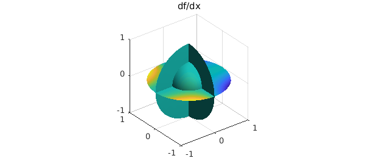
The Laplacian is computed in Cartesian coordinates using the laplacian command:
$$\Delta f = \frac{\partial^2f}{\partial x^2}+\frac{\partial^2f}{\partial y^2}+\frac{\partial^2f}{\partial z^2}.$$
f = ballfun(@(x,y,z) cos(x.*y)+sin(z));
subplot(1,2,1)
plot( f ), title('f')
subplot(1,2,2)
plot( laplacian(f) ), title('laplacian( f )')
20.4 Helmholtz solver
Ballfun has a command for solving the Helmholtz equation on the ball with Dirichlet boundary conditions. For example, to solve
$$\nabla^2u + 2u = f,\quad u|_{\partial B} = 1,$$
where $f(x,y,z) = -2(2x^2\cos(x^2)+\sin(x^2))+4\cos(x^2)$, one can execute these commands:
f = ballfun(@(x,y,z) -2*(2*x.^2.*cos(x.^2) + sin(x.^2)) + 4*cos(x.^2)); bc = @(lam, th) cos(sin(th).^2.*cos(lam).^2); u = helmholtz(f, 2, bc, 50, 50, 50); exact = ballfun(@(x,y,z) cos(x.^2)); norm(u-exact) clf, plot( u )
ans =
1.493981968634660e-13
It is also possible to solve Helmholtz's equation with Neumann boundary conditions
$$\nabla^2u + Ku = f,\quad \left.\frac{\partial u}{\partial r}\right|_{\partial B} = bc(\lambda,\theta):$$
exact = ballfun(@(x,y,z) sin(y.^2)); f = ballfun(@(x,y,z) 2*cos(y.^2)-4*y.^2.*sin(y.^2)); bc = @(lam,th) 2*(sin(th).*sin(lam)).^2.*cos((sin(th).*sin(lam)).^2); u = helmholtz(f, 0, bc, 50, 50, 50, 'neumann'); plot( u )
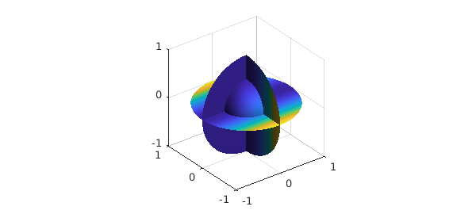
We then check if our two solutions differ by at most a constant (the kernel of the Helmholtz equation with Neumann boundary conditions):
max( [ norm(diff(u, 1)-diff(exact, 1)) ...
norm(diff(u, 2)-diff(exact, 2)) ...
norm(diff(u, 3)-diff(exact, 3)) ] )
ans =
3.536092382519439e-14
20.5 Solid harmonics
Solid harmonics appear as solutions of the Laplace equation. They are defined as
$$R^m_l(\lambda,\theta) = \sqrt{2l+3}r^lY^m_l(\lambda,\theta) = \sqrt{2l+3}r^lP^m_l(\theta)e^{im\lambda},$$
where $P^m_l$ is an associated Legendre polynomial, and they satisfy
$$\int_B R^m_l R^{m^*}_ldV = 1,\quad \forall l\in\bf{N},\quad \forall -l\leq m\leq l.$$
Ballfun provides a method for constructing these functions. For example, the solid harmonic $R^m_l$ of degree $l=4$ and order $m=-2$ is constructed as:
R = ballfun.solharm(4, -2);
plot( R ), title('R_4^{-2}')
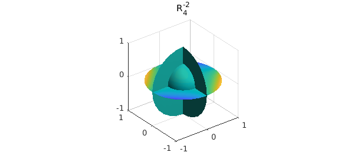
We can verify that this function is a solution of the Laplace equation $\Delta f = 0$:
norm( laplacian( R ) )
ans =
1.888485572980376e-14
We can also verify the orthonormality of the solid harmonics on the ball using the sum3 command
R40 = ballfun.solharm(4, 0); sum3(R.*conj(R)) sum3(R40.*conj(R40)) sum3(R.*conj(R40))
ans =
1
ans =
1.000000000000001
ans =
-3.686637253394264e-17
Here is a plot of the first few solid harmonics $R^m_l$, with $l=0,...,3$ and $0\leq m\leq l$.
for l = 0:3
for m = 0:l
Y = ballfun.solharm(l, m);
subplot(4,4,4*l+m+1), plot(Y)
axis off
end
end
20.6 Vector calculus with Ballfunv
Vector fields in Ballfun are implemented in the Cartesian system $(\mathbf{e}_x,\mathbf{e}_y,\mathbf{e}_z)$, where $\mathbf{e}_x$ denotes the unit vector in the $x$ direction. In fact, a vector field expressed in the spherical system $(\mathbf{e}_r,\mathbf{e}_\lambda,\mathbf{e}_\theta)$ is not always smooth in the unit ball, so it is more convenient to use Cartesian coordinates. For example, the vector field $v(x,y,z) = (\sin(x),xy,\cos(z))$ can be constructed as follows in Ballfun:
Vx = ballfun(@(x,y,z) x.*y);
Vy = ballfun(@(x,y,z) sin(x.*z));
Vz = ballfun(@(x,y,z) sin(y));
V = ballfunv(Vx, Vy, Vz)
clf, quiver( V ), title('V')
V =
ballfunv object containing
ballfun object:
domain r lambda theta vertical scale
unit ball 3 5 5 0.5
ballfun object:
domain r lambda theta vertical scale
unit ball 19 23 45 0.48
ballfun object:
domain r lambda theta vertical scale
unit ball 14 27 27 0.84
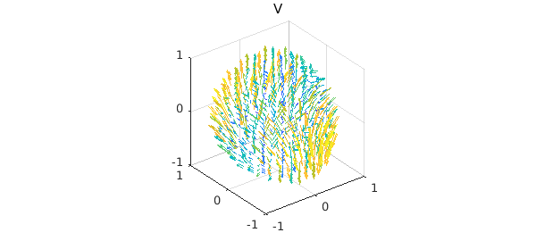
Each component is represented as a ballfun, and singularities are avoided because the components are in the directions of $\mathbf{e}_x$, $\mathbf{e}_y$, and $\mathbf{e}_z$, respectively.
The main operations for vector-valued functions are supported in Ballfun. These include the curl and the divergence, among others.
W = curl(V);
quiver( W ), title('curl( V )')
f = div(V);
plot( f ), title('div( V )')
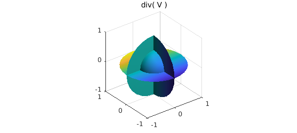
One can easily check that the vector calculus identities are satisfied. For example, the curl of a gradient field is zero:
$$\nabla\times(\nabla f) = 0$$
f = ballfun(@(x,y,z) cos(x.*z)); V = curl( grad( f ) ); norm( V )
ans =
1.498039417472287e-12
The divergence of the curl is also zero:
f = norm( div( curl( V ) ) ); norm( f )
ans =
1.135977356045423e-08
20.7 Poloidal-toroidal decomposition
In vector calculus, the poloidal-toroidal (PT) decomposition [1] is a restricted form of the Helmholtz-Hodge decomposition [4]. The idea is that any sufficiently smooth and divergence-free vector field in the ball can be expressed as the sum of a poloidal field and a toroidal field. The PT decomposition used in the analysis of divergence-free vector fields in geomagnetism, flow visualization, and incompressible fluid simulations.
For a chosen unit vector $\mathbf{e}_r$, a toroidal field, $\mathbf{T}$, is one that is orthogonal to $\mathbf{e}_r$ while a poloidal field, $\mathbf{P}$, is one whose curl is orthogonal to $\mathbf{e}_r$, i.e.,
$$ \mathbf{e}_r\cdot \mathbf{T} = 0, \quad \mathbf{e}_r\cdot (\nabla \times \mathbf{P}) = 0.$$
Let $w$ be any divergence-free vector field defined in the unit ball. The PT decomposition is the representation of $w$ as the following sum:
$$ w = \nabla\times\nabla\times(\bf{r}P_w) + \nabla\times(\bf{r}T_w),$$
where $\mathbf{r} = r\mathbf{e}_r$, and $P_w$ and $T_w$ are scalar-valued potential functions (called the poloidal and toroidal scalars). In this setting, the natural unit vector, $\mathbf{e}_r$ to select is the unit radial vector that points away from the origin. The scalars $P_w$ and $T_w$ are unique up to the addition of an arbitrary function that only depends on the radial variable, $r$.
To illustrate the decomposition, we take the divergence-free vector field $v = \nabla\times\nabla\times(\bf{r}P_w) + \nabla\times(\bf{r}T_w)$:
Pw = ballfun(@(x,y,z) cos(x.*y)); Tw = ballfun(@(x,y,z) sin(y.*z)); w = ballfunv.PT2ballfunv(Pw, Tw); quiver( w )
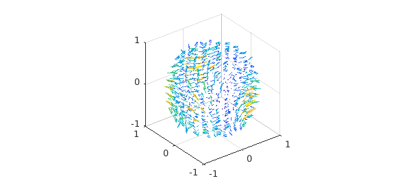
We start by checking that $v$ is a divergence-free vector field:
norm( div( w ) )
ans =
4.162099210310871e-10
The poloidal-toroidal decomposition of $v$ can be computed as follows:
[Pw, Tw] = PTdecomposition( w );
subplot(1,2,1)
plot( Pw ), title('Poloidal scalar')
subplot(1,2,2)
plot( Tw ), title('Toroidal scalar')
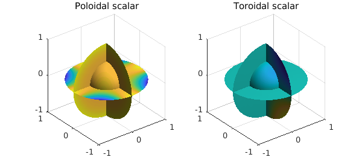
Here is a visualization of the decomposition.
[P,T] = ballfunv.PT2ballfunv(Pw, Tw);
subplot(1,3,1)
quiver( w ), title('Divergence-free field')
subplot(1,3,2)
quiver( P ), title('Poloidal component')
subplot(1,3,3)
quiver( T ), title('Toroidal component')
The original vector field can be recovered from the poloidal and toroidal scalars since
$$ w = \nabla\times\nabla\times(\bf{r}P_w) + \nabla\times(\bf{r}T_w).$$
This operation is implemented in Ballfun in the PT2ballfunv command
v = ballfunv.PT2ballfunv(Pw, Tw); norm( w - v )
ans =
1.281385019969649e-12
20.8 Helmholtz-Hodge decomposition
In vector calculus, Helmholtz's theorem states that any sufficiently smooth vector field in the ball can be expressed as a sum of a curl-free, a divergence-free, and a harmonic vector field [4].
Let $v$ be a vector field defined in the ball of radius $1$. Helmholtz's theorem says that we can decompose $v$ as follows:
$$ \mathbf{v} = \nabla f + \nabla \times \psi + \nabla\phi,$$
where $f$ and $\phi$ are scalar-valued potential functions and $\psi$ is a vector field. The first term, $\nabla f$, is a gradient field and hence curl-free, while the second term, $\nabla \times \psi$, is divergence-free. The third term is an harmonic vector field (vector Laplacian of $\nabla \phi$ is zero). From vector identities, one knows that the scalar field, $\phi$, is itself harmonic, i.e., $\Delta \phi = 0$.
The Helmholtz-Hodge decomposition can be made unique by imposing additional constraints on $f$ and $\psi$ [4]. The standard constraints are: (1) $f$ is zero on the boundary of the unit ball, (2) the normal component of $\psi$ on the boundary is zero, and (3) $\psi$ is divergence-free.
The Helmholtz-Hogde decomposition is an important tool in fluid dynamics, as it is used for flow visualization (when the fluid is compressible), in CFD simulations (to impose the imcompressibility condition), and topological analysis. A survey of applications is available here [2].
We start with the following vector field:
v = ballfunv(@(x,y,z) cos(x.*y).*z,@(x,y,z)sin(x.*z),@(x,y,z)y.*z); clf, quiver( v )
Ballfun has a command HelmholtzDecomposition that computes the Helmholtz-Hodge decomposition of a vector field. In the command lines below, $P_\psi$ and $T_\psi$ stand for the poloidal and toroidal scalars of the divergence-free vector field $\psi$.
[f, Ppsi, Tpsi, phi] = HelmholtzDecomposition( v );
The curl-free component is equal to $\nabla f$:
quiver( grad( f ) ), title('Curl-free component of v')
We confirm that this component is curl-free:
norm( curl( grad( f ) ) )
ans =
1.979683513296762e-13
We plot the harmonic component of $v$ below
quiver( grad( phi ) ), title('Harmonic component of v')
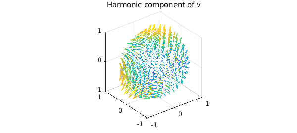
We check the harmonicity of this component:
norm( laplacian( grad( phi ) ) )
ans =
2.335397241909186e-09
The divergence-free component $\psi$ can be computed from its poloidal and toroidal scalars:
psi = ballfunv.PT2ballfunv(Ppsi, Tpsi);
quiver( curl( psi ) ), title('Divergence-free component of v')
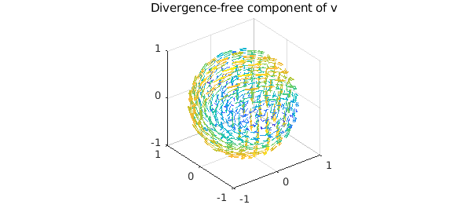
By vector identities this component is divergence-free:
norm( div( curl( psi ) ) )
ans =
3.741159555859145e-11
Here is a plot of each component of the decomposition.
subplot(2,2,1)
quiver( v ), title('Vector field')
subplot(2,2,2)
quiver( grad(f) ), title('Curl-free')
subplot(2,2,3)
quiver( curl(psi) ), title('Divergence-free')
subplot(2,2,4)
quiver( grad(phi) ), title('Harmonic')
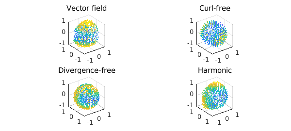
As a sanity check we confirm that the decomposition has been successful:
w = grad( f ) + curl( psi ) + grad( phi ); norm( v - w )
ans =
4.455283034067034e-12
References
[1] G. Backus, Poloidal and toroidal fields in geomagnetic field modeling, Reviews of Geophysics, 24 (1986), pp. 75-109.
[2] H. Bhatia, G. Norgard, V. Pascucci, and P.-T. Bremer, The Helmholtz-Hodge decomposition--a survey, IEEE Trans. Vis. Comput. Graphics, 19 (2013), pp. 1386-1404.
[3] N. Boulle, and A. Townsend, Computing with functions on the ball, in preparation.
[4] Y. Tong, S. Lombeyda, A. Hirani, and M. Desbrun, Discrete multiscale vector field decomposition, ACM Trans. Graphics, 22 (2003), pp. 445-452.
[5] A. Townsend, H. Wilber, and G. Wright, Computing with functions in spherical and polar geometries I. The sphere, SIAM Journal on Scientific Computing, 38 (2016), pp. C403-C425.
[6] H. Wilber, A. Townsend, and G. Wright, Computing with functions in spherical and polar geometries II. The disk, SIAM Journal on Scientific Computing, 39 (2017), pp. C238-C262.